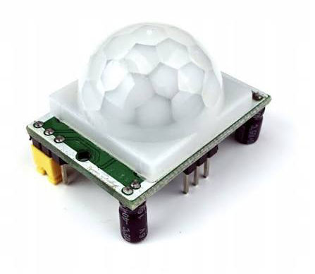
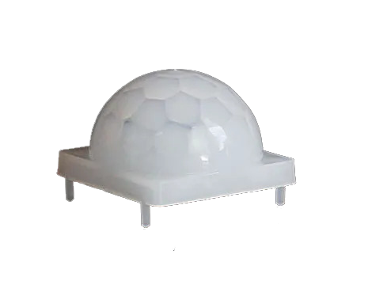
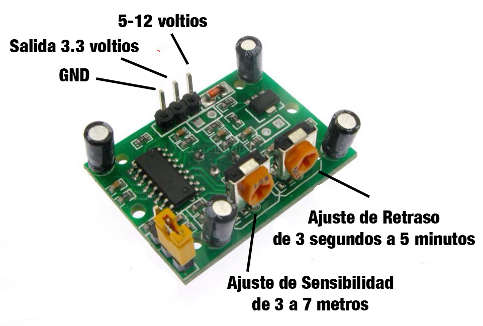
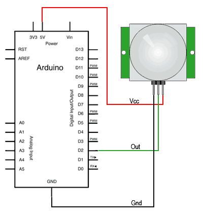
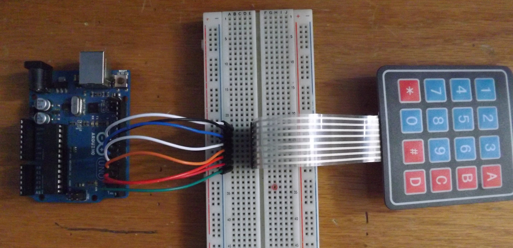
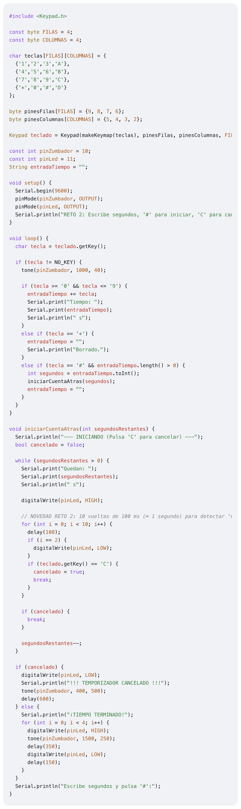

El propósito de este proyecto es diseñar y programar un sistema domótico de iluminación automática para una
habitación, capaz de encender una luz al detectar presencia y apagarla automáticamente tras un tiempo para
ahorrar energía.
• Comprender el funcionamiento de un sensor PIR. Entender cómo un detector infrarrojo pasivo
percibe el calor corporal en movimiento sin emitir radiación.
• Gestionar entradas y salidas digitales. Utilizar digitalRead() para leer el estado del sensor y
digitalWrite() para controlar el encendido de la luz (LED).
• Controlar tiempos de encendido. Programar retardos temporales mediante código para mantener la
luz activa tras la detección.
• Optimizar la eficiencia energética. Aplicar lógica condicional para evitar el consumo eléctrico
innecesario en estancias vacías.
(1) x Placa Arduino
(1) x Protoboard
(1) x Sensor de movimiento PIR HC-SR501
(1) x LED
(1) x Resistencia de 220 Ohm
(x) x M M cables (cables de macho a macho)
(x) x M H cables (cables de macho a hembra)
(1) x Zumbador activo o pasivo
(1) x Fotorresistencia LDR
(1) x Resistencia de 10 KOhm
El sensor de movimiento PIR HC-SR501 o detector de presencia, es el mismo tipo de detector que llevan las luces automáticas de portales, garajes y baños públicos.

La lente de Fresnel (cúpula blanca). Su superficie facetada concentra los rayos infrarrojos (calor del cuerpo humano) desde distintos ángulos hacia el sensor piroeléctrico central.

Pines de conexión. Mirando la placa por detrás (o quitando la cúpula blanca), encontrarás tres pines:
VCC (alimentación a 5V)
OUT (señal de salida: HIGH si hay movimiento, LOW si no lo hay)
GND (tierra)
Ajuste de potenciómetros. Incluye dos reguladores naranjas:
Uno ajusta la distancia de detección (de 3 a 7 metros)
El otro, el tiempo interno que el sensor mantiene su salida en HIGH.
Para que nuestro programa controle el tiempo exacto, giraremos el potenciómetro de tiempo al mínimo (tope
hacia la izquierda).




El sensor HC-SR501 no necesita librerías. Funciona como un interruptor inteligente: cuando alguien entra en su campo de visión envía 5V (HIGH) por su pin OUT; cuando todo está quieto envía 0V (LOW).
Al darle corriente, el sensor PIR necesita unos segundos para medir la temperatura ambiente de la habitación. Si no pones este delay(10000) inicial, la luz se encenderá sola nada más conectar el cable USB.
const int pinPIR = 2; // Pin de señal del sensor PIR
const int pinLuz = 11; // Pin del LED (luz de la habitación)
void setup()
{
pinMode(pinPIR, INPUT); // El sensor envía datos hacia Arduino
pinMode(pinLuz, OUTPUT); // Arduino envía corriente al LED
Serial.begin(9600);
// Calibración inicial de 10 segundos
Serial.println("Calibrando sensor de la habitación...");
delay(10000);
Serial.println("Sistema listo.");
}
En una habitación real pondríamos delay(60000) (1 minuto), pero en clase es mejor usar 5000 (5 segundos) para
no perder tiempo esperando en cada prueba.
Fíjate en qué ocurre si entras a la habitación y sigues moviéndote a los 4 segundos: como Arduino está
"congelado" dentro del delay(5000), la luz se apagará a los 5 segundos igualmente y tardará un instante en
volver a encenderse. Esto lo solucionaremos en el Reto 2.
Una vez que la luz automática básica funcione en tu mesa, supera estas tres mejoras progresivas:
Aviso sonoro antes de quedarse a oscuras.
Conecta un zumbador (buzzer) al pin 10. Haz que la luz esté encendida durante 4 segundos normales y, justo 1
segundo antes de apagarse, emita un pitido corto (tone(10, 1000, 150);) seguido de delay(1000) antes de apagar
el LED. Así avisa al usuario de que la luz se va a cortar.
Luz inteligente que nunca se apaga mientras te mueves.
Sustituye el delay() bloqueante por la función millis(). Guarda en una variable unsigned long
UltimoMovimiento = millis(); cada vez que digitalRead(pinPIR) == HIGH. Apaga el LED únicamente cuando se
cumpla la condición millis() - ultimoMovimiento >= 5000.
De este modo, mientras sigas moviéndote dentro de la habitación, el contador se reiniciará continuamente y nunca te
quedarás a oscuras.
Ahorro energético con sensor de luz LDR.
Añade una fotorresistencia (LDR) con una resistencia de 10 kΩ al pin analógico A0.
Programa el sistema para que la luz de la habitación solo se encienda si hay movimiento Y además es de noche
(digitalRead(pinPIR) == HIGH && analogRead(A0) < 400).
Si entra luz natural por la ventana de la habitación, la bombilla permanecerá apagada aunque entre alguien.